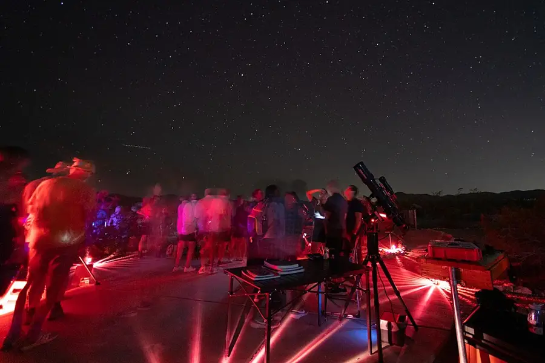

Star Party Hosts
Teens host a stargazing evening for families: red-light discipline, a rehearsed sky tour, and the old stories told as stories under the things themselves.
Before you begin
- Ages
- 13–14
- Group
- 4–16 kids
- Time
- 50–60 min
- Where
- Outdoors
- Prep
- Some prep needed

Setup
Plan the party in daylight, twice over: first the sky, then the ground. The sky: choose the date for the moon before anything else. A young or absent moon leaves the sky dark for the faint guests, and the hosts build the tour from an almanac's word on what will actually be up: which planets are out and when they set, which constellations stand where at party hour, and one deep guest worth the telescope's time, rehearsed on the chart until every host can find the tour's stops with their eyes shut at noon. Late summer is this record's favoured season, warm dark, the summer triangle overhead, and in August the Perseid meteors falling for anyone patient, but any clear, moon-thin night the almanac vouches for will do. Then the ground, walked in daylight with a host's suspicion: trip hazards marked or moved, the dark zone's edges defined, a lit path, dim, low, and pointed at the ground, from the door to the field, the drinks table placed where its lamp never sees the viewing field, and the cancellation rule agreed in advance and printed on the invitation: cloud decides, the hosts announce by a stated hour, and a cloudy party becomes a story night indoors rather than a fraud under a ceiling of grey.
Materials
- red torches only, one per host plus spares (torch beams wrapped in red film or red-cellophane. White light is the party's one banned substance, because night vision takes twenty minutes to grow and one careless beam to spend)
- the night's own chart (a planisphere set for the date or a chart drawn for that evening's actual sky. The hosts tour what is really up there tonight, checked against an almanac or the adult's sky app in daylight, never a generic poster sky)
- blankets and a groundsheet constellation (the viewing field laid out in daylight: where guests lie, where hosts stand, where the drinks table sits outside the dark zone's edge)
- a telescope or binoculars if the site has them, host-handled only (guests look; hosts aim, an instrument passed hand to hand in the dark ends the evening looking at the ground)
Steps
- The framing, at the field's edge as the light goes: 'Darkness is the venue; the hosts protect it. Tonight this field is the darkest room our guests will be in all year, and everything in it works by rules that protect the dark: red light only, voices low, no screens, no beams at faces, because your eyes are instruments that take twenty minutes to tune, and the party is tuned around them. We hosts will walk you up the sky in order: the bright signposts first, then the shapes they anchor, then one guest through the telescope who repays the queue. The stories we tell are told as stories. The old names, the old plots, labelled as the treasures they are, while the things themselves hang over us being none of them and all the brighter for it. If the sky clouds, we will say so, and the party becomes stories and cocoa, honestly announced. Look up when you are ready. The first star you find on your own is yours, and pointing it out to a host is the party's first ceremony.' Guests are given the dark twenty minutes then, lying back, eyes tuning, hosts silent, because a star party that starts talking immediately has mistaken its venue.
- The tour, walked in the order rehearsed: the lead host takes the signposts. The evening's planets first, named and pointed with the red torch's beam laid briefly on the grass, never waved at the sky; then the anchor constellations, traced slowly, one line at a time, with the guests' eyes given the full count of ten between lines because a shape drawn too fast is drawn on nobody's sky. Each stop carries its story told at story length, ninety seconds, no more, and told honestly: 'the hunters and bears and queens are the names the old sky-keepers gave; the stars are suns, and both of those are true at once, in different departments.' Hosts stationed around the field repeat the pointing for guests whose angle differs, and the tour doubles back for anyone who lost a shape without embarrassment or comment: losing the thread in a dark sky is the normal condition of beginners, and the party's hosts treat a request to re-find as the compliment it is.
- The telescope guest and the meteor watch: the night's deep guest, a planet's rings, a cluster, the moon's edge if the moon is out, is viewed in an ordered queue the hosts run like a gallery: one guest at the eyepiece, hosts aiming and re-aiming between looks because the sky turns under a fixed instrument, every guest told what they are seeing before their eye goes down, so the looking has somewhere to land. Nobody touches the instrument; a bumped telescope is re-aimed by its host without a word of blame, because the queue's mood is part of the optics. Then the formal party dissolves into its second half, by design: blankets, low talk, and the meteor watch. Counting in the open, a tally kept on the hosts' slate, streaks claimed only by the counter who saw them whole. The tally is the party's souvenir and its honesty check: a quiet sky's count of three is entered as three, celebrated as three, and never improved in the retelling on the hosts' side of the slate.
- The mid-party reading, a host's quiet round: halfway through, the hosts read the field the way they rehearsed reading it, who is cold (blankets from the store, offered before asked), who is lost (a host lies down beside them and re-finds one bright anchor, conversationally, as one sky-watcher to another), whose children are flagging (the drinks table's cocoa makes its round), and whether the sky has changed its offer, cloud creeping gets announced early and kindly, with the story-night shape ready: 'the sky has closed its second half; the parlour opens with the Perseus story and the chart.' A party that reads its guests can change its shape without breaking its spell, and the hosts practise the announcement as a piece of hospitality, not an apology.
- Closing under the sky: the last look is collective, the whole field on its back for the tour's brightest stop revisited in silence, sixty full seconds of it, and then the hosts close the party standing, by name and by thanks, in the tell-back's shape: 'You gave this field your twenty quiet minutes while your eyes tuned, and the sky spent the evening repaying you. Planets by their names, the old shapes standing where the almanac promised, a tally of meteors we counted together and did not improve. We hosted the dark and the dark hosted us. Next clear night, you own the first steps yourselves: one bright signpost, patience, red light, and looking up. The sky keeps office hours every night it is clear. Tonight you learned its address.' White light returns by ceremony, the door lamp first, faces averted, guests given their moment to blink back into the lit world, and the field is cleared by red torch until the last blanket is in, so the venue is left as dark and clean as it was lent.
Variations
Easier: A story-night version (cloud decides, as the invitation promised): the party moves indoors exactly as announced, the chart on the wall, the tour walked in words at the same stops in the same order, the stories told entire, and the telescope guest replaced by the hosts' best account of it, honestly labelled as a description of a thing nobody saw tonight.
Harder: A meteor-night version (a shower's peak): the tour shortens to the signposts and the party becomes the watch entire, blankets in a circle, the tally slate at its centre, cocoa at the hour, and the count read aloud at closing as the night's whole result.
Safety
Darkness is managed, never merely enjoyed: the party field is one bounded space the hosts have walked in daylight, its edges known to every guest at the framing, and nobody leaves the field alone or unannounced. A guest who needs the lit path goes with a host, red torch low, because a dark field's one real danger is friendly people moving at different heights and speeds among blankets, ropes and each other. Trip hazards are marked or removed in daylight; the drinks table and its hot cocoa sit outside the dark zone with the adult, and hot drinks travel to the field's edge, never across lying guests. Red light only is a safety rule as well as a courtesy, white beams at face height steal the vision everyone present is walking by. The weather call is the adult's and it is final: cold guests end parties early without debate, the session's length is set for the season's night temperatures, and lightning anywhere in the sky closes the field on the spot. A star party under a storm is not brave, it is finished.
Inclusion notes
Hosting a sky is work at every body's measure: the lead host's tour is a spoken craft learned from the chart in daylight and given standing, seated on the field's stool, or from a chair at the dark zone's edge, the pointing travels by relay hosts around the field, so no guest's view depends on one host's position or reach. The tally slate, the story stops, the cocoa round and the re-finding of lost guests are full host jobs, several of them lying-down jobs on the blankets among the guests, where a host whose place is on the ground is at the party's exact centre. Stories and the tour can be given in the registers the guests need, spoken, signed by a host, told close and quiet to one family at a time, and the chart work in daylight welcomes every hand: drawing the night's sky is preparatory hosting at full standing. A guest who cannot lie back views from a reclined chair the hosts place in the field's front row at setup, by design rather than by exception, because the sky is the one ceiling every seat in this venue faces equally.
Tried this? Rate it
Your ratings live in this browser only. Nobody else can see them. There are no community ratings here; every star on this card is yours.
Rate this activity, add a note, or write a reflection
Quick reflection
Optional, saved with your rating, and exported with "Copy my week".
Full activity card,